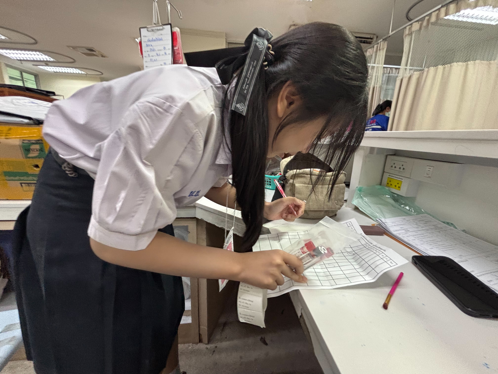

MY EXPERIENCE ♡
ฝึกประสบการณ์ที่โรงพยาบาล ✧
ประสบการณ์ที่ทำให้แป้งได้รู้จักงานด้านสุขภาพมากขึ้น และยิ่งมั่นใจว่าชอบเส้นทางนี้ค่ะ
เรียนรู้จากหน้างานจริง ♡
ได้ฝึกช่วยงานเบื้องต้น เช่น วัดความดัน ดูขั้นตอนการให้บริการ และจัดเอกสาร ถึงจะเป็นงานเล็ก ๆ แต่ได้ฝึกความรอบคอบกับการพูดคุยกับคนไข้เยอะมากเลยค่ะ


✦ จากประสบการณ์ครั้งนี้ ทำให้แป้งอยากตั้งใจเรียนต่อคณะเทคนิคการแพทย์ มหาวิทยาลัยเชียงใหม่มากขึ้นค่ะ ✦